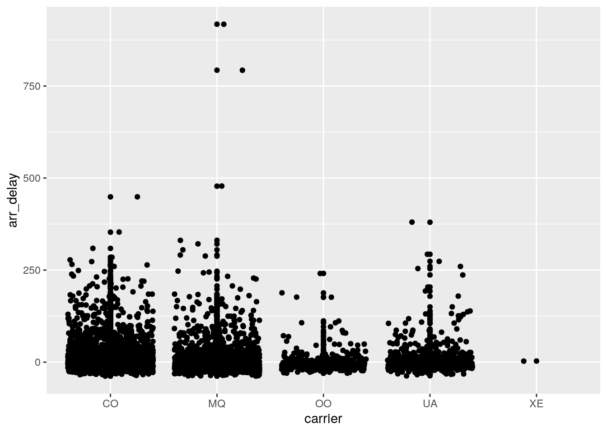

May 9, 2021
Over the course of the semester, we have explored various different aspects of R including wrangling in project 1 and modeling in project 2 . Recently, we began to talk about python and its interactions with R.
Python is a general software development programming language that has evolved over time to included packages that allow it to do things that many other languages focus on like data science with R and website design with HTML.

R on the other hand focuses on data science and statistical modeling.

As we can see here, Python can do simple math.
print(1+1)## 2So can R!
1+1## [1] 2Through the Reticulate package, we are able to communicate between R and python, transferring data seamlessly.
import pandas
flights = pandas.read_csv("flights.csv")
flights = flights[flights['dest']== "ORD"]
flights = flights[['carrier', 'dep_delay', 'arr_delay']]
flights = flights.dropna()This imports a dataset using python and manipulates it. We can then use R to graph the data.
ggplot(py$flights, aes(carrier, arr_delay)) + geom_point() + geom_jitter() Overall, both python and R have their individual benefits, but using packages like reticulate can help bring both together!